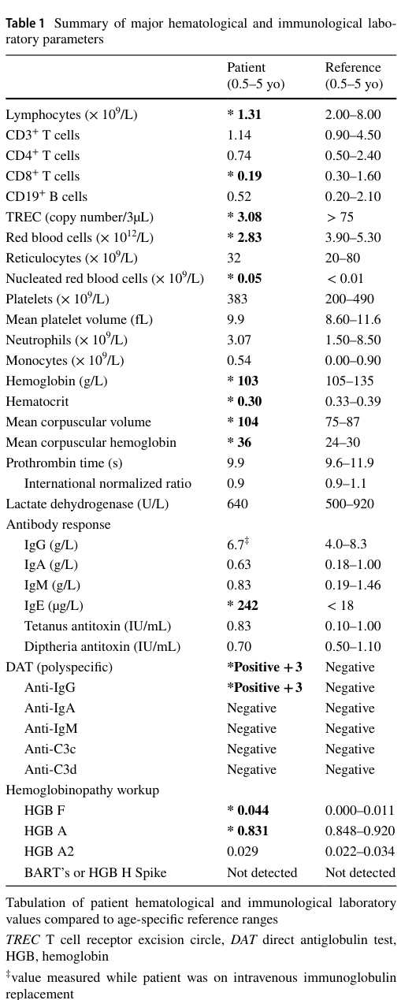

ICHAD syndrome (immunodysregulation, craniofacial anomalies, hearing impairment, athelia and developmental delay) is a syndromic inborn error of immunity caused by de novo heterozygous variants in IKZF2, which encodes the Ikaros-family zinc-finger transcription factor HELIOS. The causal variants alter the N-terminal DNA-binding zinc fingers 2 and 3 (an in-frame duplication of exon 5, p.Gly136_Ser191dup, and the missense p.Gly153Arg), and the variant proteins interfere with wild-type HELIOS repression of the IL2 promoter in a dominant negative manner. The immune picture combines T cell lymphopenia and recurrent respiratory infections with immune overactivation (autoimmune hemolytic anemia, severe atopic dermatitis, elevated IgE, hyperactive cytokine-producing CD4+ and CD8+ T cells, and impaired natural killer cell differentiation). Extra-immune features include cleft palate, congenital sensorineural hearing loss, absent nipples, facial dysmorphism, hypospadias, and developmental delay with autism.
Ask a research question about ICHAD Syndrome. OpenScientist will conduct autonomous deep research using the Disorder Mechanisms Knowledge Base and PubMed literature (typically 10-30 minutes).
Do not include personal health information in your question. Questions and results are cached in your browser's local storage.
name: ICHAD Syndrome
creation_date: "2026-10-08T12:00:00Z"
category: Mendelian
synonyms:
- Immunodysregulation, craniofacial anomalies, hearing impairment, athelia, and developmental delay
- Dominant negative HELIOS deficiency
disease_term:
preferred_term: ICHAD syndrome
term:
id: MONDO:0979234
label: ICHAD syndrome
description: >-
ICHAD syndrome (immunodysregulation, craniofacial anomalies, hearing impairment,
athelia and developmental delay) is a syndromic inborn error of immunity caused by
de novo heterozygous variants in IKZF2, which encodes the Ikaros-family zinc-finger
transcription factor HELIOS. The causal variants alter the N-terminal DNA-binding
zinc fingers 2 and 3 (an in-frame duplication of exon 5, p.Gly136_Ser191dup, and the
missense p.Gly153Arg), and the variant proteins interfere with wild-type HELIOS
repression of the IL2 promoter in a dominant negative manner. The immune picture
combines T cell lymphopenia and recurrent respiratory infections with immune
overactivation (autoimmune hemolytic anemia, severe atopic dermatitis, elevated IgE,
hyperactive cytokine-producing CD4+ and CD8+ T cells, and impaired natural killer cell
differentiation). Extra-immune features include cleft palate, congenital
sensorineural hearing loss, absent nipples, facial dysmorphism, hypospadias, and
developmental delay with autism.
notes: >-
Scope. This entry covers the syndromic, dominant negative DNA-binding-domain IKZF2
disorder (OMIM 621234, ORPHA 699599). Two other IKZF2 phenotypes are kept out of it
because MONDO and the primary literature treat them as distinct: (1) HELIOS deficiency
(MONDO:0800139), a non-syndromic combined immunodeficiency or immune dysregulation
caused by monoallelic truncating or biallelic missense variants that mostly lie
outside the DNA-binding zinc fingers (PMID:34826260, PMID:34826259, PMID:34920454), and
(2) autosomal dominant non-syndromic hearing loss from missense variants at the
Zn2+-coordinating residues of zinc fingers 2 and 3 (PMID:39406892, PMID:39754384).
The published ICHAD case series is two unrelated children (PMID:37316189); the
detailed immunological study in PMID:40295428 is of the first of those two probands,
not a new patient, so phenotype frequencies are not assigned. No GeneReviews chapter
covers the disorder. The hearing-only zinc finger 2/3 missense variants did not show
strong dominant interference with wild-type HELIOS in IL2-promoter assays
(PMID:39406892), so isolated hearing loss with an IKZF2 variant is not by itself
ICHAD.
inheritance:
- name: Autosomal Dominant, De Novo
description: >-
Both reported probands carry heterozygous IKZF2 variants absent from their unaffected
parents. A single dominant negative allele is sufficient to cause the syndrome.
inheritance_term:
preferred_term: Autosomal dominant inheritance
term:
id: HP:0000006
label: Autosomal dominant inheritance
evidence:
- reference: PMID:37316189
reference_title: Dominant negative variants in IKZF2 cause ICHAD syndrome, a new disorder characterised by immunodysregulation, craniofacial anomalies, hearing impairment, athelia and developmental delay.
supports: SUPPORT
evidence_source: HUMAN_CLINICAL
snippet: >-
Genome sequencing revealed de novo heterozygous variants that alter the critical
DNA-binding zinc fingers (ZFs) of Helios.
explanation: >-
Heterozygous de novo variants in both probands establish a dominant, typically
de novo mode of inheritance.
- name: Typically De Novo
inheritance_term:
preferred_term: Typically de novo
term:
id: HP:0025352
label: Typically de novo
evidence:
- reference: PMID:37316189
reference_title: Dominant negative variants in IKZF2 cause ICHAD syndrome, a new disorder characterised by immunodysregulation, craniofacial anomalies, hearing impairment, athelia and developmental delay.
supports: SUPPORT
evidence_source: HUMAN_CLINICAL
snippet: >-
Here, we describe a novel syndrome in two unrelated children caused by heterozygous
de novo IKZF2 variants that exclusively affect the highly conserved zinc fingers (ZF)
in the DNA binding domain of Helios.
explanation: Both reported cases arose de novo.
pathophysiology:
- name: Dominant Negative IKZF2 DNA-Binding Zinc Finger Variant
biological_scale: MOLECULAR
mechanism_confidence: ESTABLISHED
description: >-
De novo heterozygous variants confined to the N-terminal DNA-binding zinc fingers 2
and 3 of HELIOS: an in-frame tandem duplication of exon 5 (p.Gly136_Ser191dup) and a
missense change at a base-recognition residue of zinc finger 2 (p.Gly153Arg). The
variant proteins are expressed and interfere with wild-type HELIOS in a dominant
negative manner, which the authors propose explains a more profound, syndromic
phenotype than that of loss-of-function IKZF2 alleles.
genetic_context:
functional_impact_category: DOMINANT_NEGATIVE
variant_origin: GERMLINE
zygosity: HETEROZYGOUS
gene:
preferred_term: IKZF2
term:
id: hgnc:13177
label: IKZF2
description: De novo in both reported probands.
molecular_functions:
- preferred_term: DNA-binding transcription repressor activity
modifier: DECREASED
term:
id: GO:0001217
label: DNA-binding transcription repressor activity
evidence:
- reference: PMID:37316189
reference_title: Dominant negative variants in IKZF2 cause ICHAD syndrome, a new disorder characterised by immunodysregulation, craniofacial anomalies, hearing impairment, athelia and developmental delay.
supports: SUPPORT
evidence_source: HUMAN_CLINICAL
snippet: >-
Proband 1 had a tandem duplication of ZFs 2 and 3 in the DNA-binding domain of
Helios (p.Gly136_Ser191dup) and Proband 2 had a missense variant impacting one of
the key residues for specific base recognition and DNA interaction in ZF2 of Helios
(p.Gly153Arg).
explanation: Defines the two causal variants and their location in the DNA-binding zinc fingers.
- reference: PMID:37316189
reference_title: Dominant negative variants in IKZF2 cause ICHAD syndrome, a new disorder characterised by immunodysregulation, craniofacial anomalies, hearing impairment, athelia and developmental delay.
supports: SUPPORT
evidence_source: HUMAN_CLINICAL
snippet: >-
Our data suggest a dominant negative mechanism underlying the syndrome, resulting in
a more profound phenotype than that associated with loss-of-function IKZF2 variants.
explanation: Distinguishes the dominant negative syndromic disorder from loss-of-function HELIOS deficiency.
downstream:
- target: Loss of HELIOS-Mediated IL2 Repression
causal_link_type: DIRECT
evidence:
- reference: PMID:37316189
reference_title: Dominant negative variants in IKZF2 cause ICHAD syndrome, a new disorder characterised by immunodysregulation, craniofacial anomalies, hearing impairment, athelia and developmental delay.
supports: SUPPORT
evidence_source: IN_VITRO
snippet: >-
Functional studies confirmed that both these variant proteins are expressed and
that they interfere with the ability of the wild-type Helios protein to perform
its canonical function-repressing IL2 transcription activity-in a dominant
negative manner.
explanation: >-
IL2 promoter reporter assays in HEK293 cells show both variants block wild-type
HELIOS repression of IL2 transcription.
- target: Impaired Natural Killer Cell Differentiation
causal_link_type: INDIRECT_UNKNOWN_INTERMEDIATES
evidence:
- reference: PMID:40295428
reference_title: A Germline Heterozygous Dominant Negative IKZF2 Variant Causing Syndromic Primary Immune Regulatory Disorder and ICHAD.
supports: SUPPORT
evidence_source: HUMAN_CLINICAL
snippet: >-
Multi-parameter flow cytometry analyses of patient peripheral blood mononuclear
cells revealed strongly impaired natural killer cell differentiation and function
explanation: Patient cells carrying the duplication variant show defective NK cell differentiation.
- target: Impaired Cochlear Outer Hair Cell Maturation
causal_link_type: INDIRECT_UNKNOWN_INTERMEDIATES
evidence:
- reference: PMID:39406892
reference_title: Exome variant prioritization in a large cohort of hearing-impaired individuals indicates IKZF2 to be associated with non-syndromic hearing loss and guides future research of unsolved cases.
supports: SUPPORT
directness: INDIRECT
evidence_source: HUMAN_CLINICAL
snippet: >-
These variants specifically affected Zn2+-coordinating cysteine or histidine
residues of the zinc finger motifs 2 and 3 of the encoded protein Helios.
explanation: >-
Variants in the same zinc fingers 2 and 3 cause dominantly inherited hearing loss
in humans, supporting a role for this domain in auditory function; the cochlear
cell-level step itself is inferred from the mouse model.
- name: Loss of HELIOS-Mediated IL2 Repression
biological_scale: MOLECULAR
mechanism_confidence: ESTABLISHED
description: >-
HELIOS stabilizes regulatory T cell identity partly by silencing the IL2 locus. The
ICHAD variants block wild-type HELIOS repression of the IL2 promoter, and the
duplication variant also lowers HELIOS protein levels.
biological_processes:
- preferred_term: negative regulation of interleukin-2 production
modifier: DECREASED
term:
id: GO:0032703
label: negative regulation of interleukin-2 production
evidence:
- reference: PMID:40295428
reference_title: A Germline Heterozygous Dominant Negative IKZF2 Variant Causing Syndromic Primary Immune Regulatory Disorder and ICHAD.
supports: SUPPORT
evidence_source: IN_VITRO
snippet: >-
This variant led to reduced HELIOS protein expression and dominant interference of
wild-type HELIOS-mediated repression of the IL2 promoter.
explanation: The duplication variant both reduces HELIOS protein and blocks its IL2 repression.
downstream:
- target: T Cell Hyperactivation and Effector Cytokine Overproduction
causal_link_type: INDIRECT_UNKNOWN_INTERMEDIATES
- name: T Cell Hyperactivation and Effector Cytokine Overproduction
biological_scale: CELLULAR
mechanism_confidence: PROVISIONAL
description: >-
Patient CD4+ T cells are hyperactive, secrete elevated levels of nearly all T helper
cytokines and proliferate readily; CD8+ T cells show increased activation; and
regulatory T cells develop in normal numbers but aberrantly produce T helper
cytokines. This loss of immune restraint is the proposed basis of the autoimmune and
atopic features. It rests on one patient's cells.
cell_types:
- preferred_term: CD4-positive, alpha-beta T cell
term:
id: CL:0000624
label: CD4-positive, alpha-beta T cell
- preferred_term: regulatory T cell
term:
id: CL:0000815
label: regulatory T cell
biological_processes:
- preferred_term: T cell activation
modifier: INCREASED
term:
id: GO:0042110
label: T cell activation
evidence:
- reference: PMID:40295428
reference_title: A Germline Heterozygous Dominant Negative IKZF2 Variant Causing Syndromic Primary Immune Regulatory Disorder and ICHAD.
supports: SUPPORT
evidence_source: HUMAN_CLINICAL
snippet: >-
Strikingly, patient CD4+ T cells were hyperactive, produced elevated levels of
nearly all T helper (TH) cytokines, and readily proliferated in response to
stimulation. Patient regulatory T cells (Tregs) developed normally but aberrantly
produced high levels of many TH cytokines.
explanation: Ex vivo immunophenotyping of patient T cell subsets.
downstream:
- target: Immune Dysregulation
causal_link_type: INDIRECT_UNKNOWN_INTERMEDIATES
- target: Autoimmune Hemolytic Anemia
causal_link_type: INDIRECT_UNKNOWN_INTERMEDIATES
- target: Atopic Dermatitis
causal_link_type: INDIRECT_UNKNOWN_INTERMEDIATES
- name: Impaired Natural Killer Cell Differentiation
biological_scale: CELLULAR
mechanism_confidence: PROVISIONAL
description: >-
Flow cytometry of the duplication carrier's blood showed strongly impaired natural
killer cell differentiation and function. Its clinical consequence in ICHAD has not
been defined.
cell_types:
- preferred_term: natural killer cell
term:
id: CL:0000623
label: natural killer cell
biological_processes:
- preferred_term: natural killer cell differentiation
modifier: DECREASED
term:
id: GO:0001779
label: natural killer cell differentiation
evidence:
- reference: PMID:40295428
reference_title: A Germline Heterozygous Dominant Negative IKZF2 Variant Causing Syndromic Primary Immune Regulatory Disorder and ICHAD.
supports: SUPPORT
evidence_source: HUMAN_CLINICAL
snippet: >-
Multi-parameter flow cytometry analyses of patient peripheral blood mononuclear
cells revealed strongly impaired natural killer cell differentiation and function
explanation: Patient NK cell immunophenotyping.
- name: Impaired Cochlear Outer Hair Cell Maturation
biological_scale: CELLULAR
mechanism_confidence: HYPOTHETICAL
description: >-
In mice, Helios is expressed in postnatal cochlear outer hair cells and is required
for their functional maturation (prestin-dependent electromotility); an Ikzf2
point mutant (cello) has early-onset sensorineural hearing loss. Imaging of both
ICHAD probands showed structurally normal inner ears, consistent with a hair-cell
rather than a structural cause, but no human cochlear tissue has been examined.
cell_types:
- preferred_term: cochlear outer hair cell
term:
id: CL:0000601
label: cochlear outer hair cell
biological_processes:
- preferred_term: inner ear auditory receptor cell differentiation
modifier: DECREASED
term:
id: GO:0042491
label: inner ear auditory receptor cell differentiation
evidence:
- reference: PMID:30464345
reference_title: Helios is a key transcriptional regulator of outer hair cell maturation.
supports: SUPPORT
directness: INDIRECT
evidence_source: MODEL_ORGANISM
snippet: >-
Here we identify Ikzf2 (which encodes Helios) as an essential transcription factor
in mice that is required for OHC functional maturation and hearing.
explanation: Mouse evidence that Helios is required for outer hair cell maturation.
downstream:
- target: Sensorineural Hearing Impairment
causal_link_type: INDIRECT_UNKNOWN_INTERMEDIATES
evidence:
- reference: PMID:30464345
reference_title: Helios is a key transcriptional regulator of outer hair cell maturation.
supports: SUPPORT
directness: INDIRECT
evidence_source: MODEL_ORGANISM
snippet: >-
Helios is expressed in postnatal mouse OHCs, and in the cello mouse model a point
mutation in Ikzf2 causes early-onset sensorineural hearing loss.
explanation: Ikzf2 mutation in mouse outer hair cells produces sensorineural hearing loss.
phenotypes:
- category: Immunologic
name: Immune Dysregulation
description: >-
Immune overactivation with autoimmunity and atopy alongside susceptibility to
infection.
phenotype_term:
preferred_term: Immune dysregulation
term:
id: HP:0002958
label: Immune dysregulation
evidence:
- reference: PMID:37316189
reference_title: Dominant negative variants in IKZF2 cause ICHAD syndrome, a new disorder characterised by immunodysregulation, craniofacial anomalies, hearing impairment, athelia and developmental delay.
supports: SUPPORT
evidence_source: HUMAN_CLINICAL
snippet: >-
We performed detailed phenotypic, genomic and functional investigations on two
unrelated individuals with a phenotype of immune dysregulation combined with
syndromic features including craniofacial differences, sensorineural hearing loss
and congenital abnormalities.
explanation: Immune dysregulation is a defining feature in both probands.
- category: Hematologic
name: Autoimmune Hemolytic Anemia
description: >-
Direct antiglobulin test-positive autoimmune hemolytic anemia from two months of age
in proband 1, initially a mixed cold and warm phenotype.
phenotype_term:
preferred_term: Autoimmune hemolytic anemia
term:
id: HP:0001890
label: Autoimmune hemolytic anemia
evidence:
- reference: PMID:40295428
reference_title: A Germline Heterozygous Dominant Negative IKZF2 Variant Causing Syndromic Primary Immune Regulatory Disorder and ICHAD.
supports: SUPPORT
evidence_source: HUMAN_CLINICAL
snippet: >-
The immunodysregulation resulted in autoimmune hemolytic anemia (AIHA) and atopic
dermatitis.
explanation: AIHA reported in the ICHAD proband.
- category: Dermatologic
name: Atopic Dermatitis
description: Severe atopic dermatitis from ten months of age.
phenotype_term:
preferred_term: Atopic dermatitis
term:
id: HP:0001047
label: Atopic dermatitis
evidence:
- reference: PMID:40295428
reference_title: A Germline Heterozygous Dominant Negative IKZF2 Variant Causing Syndromic Primary Immune Regulatory Disorder and ICHAD.
supports: SUPPORT
evidence_source: HUMAN_CLINICAL
snippet: >-
The immunodysregulation resulted in autoimmune hemolytic anemia (AIHA) and atopic
dermatitis.
explanation: Atopic dermatitis reported as a manifestation of immunodysregulation.
- category: Laboratory
name: Increased Circulating IgE
phenotype_term:
preferred_term: Increased circulating IgE concentration
term:
id: HP:0003212
label: Increased circulating IgE concentration
evidence:
- reference: PMID:37316189
reference_title: Dominant negative variants in IKZF2 cause ICHAD syndrome, a new disorder characterised by immunodysregulation, craniofacial anomalies, hearing impairment, athelia and developmental delay.
supports: SUPPORT
evidence_source: HUMAN_CLINICAL
snippet: >-
Serum immunoglobulins showed normal levels of IgG, IgA, and IgM, but elevated IgE
levels
explanation: Elevated IgE in proband 1.
- category: Immunologic
name: T Cell Lymphopenia
description: Low T cell numbers detected by abnormal newborn TREC screening in both probands.
phenotype_term:
preferred_term: T cell lymphopenia
term:
id: HP:0005403
label: Decreased total T cell count
evidence:
- reference: PMID:37316189
reference_title: Dominant negative variants in IKZF2 cause ICHAD syndrome, a new disorder characterised by immunodysregulation, craniofacial anomalies, hearing impairment, athelia and developmental delay.
supports: SUPPORT
evidence_source: HUMAN_CLINICAL
snippet: >-
The core phenotype in these two individuals comprises T cell lymphopenia, recurrent
respiratory infections, craniofacial differences, cleft palate, sensorineural
hearing impairment, athelia, and developmental delay.
explanation: T cell lymphopenia is part of the core phenotype.
- category: Immunologic
name: Decreased B Cell Count
description: Low B cell numbers in proband 2.
phenotype_term:
preferred_term: Decreased total B cell count
term:
id: HP:0010976
label: Decreased total B cell count
evidence:
- reference: PMID:37316189
reference_title: Dominant negative variants in IKZF2 cause ICHAD syndrome, a new disorder characterised by immunodysregulation, craniofacial anomalies, hearing impairment, athelia and developmental delay.
supports: SUPPORT
evidence_source: HUMAN_CLINICAL
snippet: >-
He was diagnosed with T cell lymphopenia, based on abnormal newborn TREC assay and
abnormal flow cytometry revealing low T (total CD3 and CD4) and B cell numbers.
explanation: Low B cell numbers in proband 2.
- category: Laboratory
name: Decreased Circulating IgG
description: Mildly low IgG with poor vaccine responses in proband 2; IgG was normal in proband 1.
phenotype_term:
preferred_term: Decreased circulating IgG concentration
term:
id: HP:0004315
label: Decreased circulating IgG concentration
evidence:
- reference: PMID:37316189
reference_title: Dominant negative variants in IKZF2 cause ICHAD syndrome, a new disorder characterised by immunodysregulation, craniofacial anomalies, hearing impairment, athelia and developmental delay.
supports: SUPPORT
evidence_source: HUMAN_CLINICAL
snippet: >-
Assessment of humoral immune function revealed mildly low serum IgG with normal IgM
and IgA levels, and additionally poor responses to routine vaccines
explanation: Humoral defect in proband 2.
- category: Respiratory
name: Recurrent Respiratory Infections
phenotype_term:
preferred_term: Recurrent respiratory infections
term:
id: HP:0002205
label: Recurrent respiratory infections
evidence:
- reference: PMID:37316189
reference_title: Dominant negative variants in IKZF2 cause ICHAD syndrome, a new disorder characterised by immunodysregulation, craniofacial anomalies, hearing impairment, athelia and developmental delay.
supports: SUPPORT
evidence_source: HUMAN_CLINICAL
snippet: >-
The core phenotype in these two individuals comprises T cell lymphopenia, recurrent
respiratory infections, craniofacial differences, cleft palate, sensorineural
hearing impairment, athelia, and developmental delay.
explanation: Recurrent respiratory infections are part of the core phenotype.
- category: Respiratory
name: Recurrent Pneumonia
description: Recurrent pneumonia with chronic right upper lobe atelectasis in proband 2.
phenotype_term:
preferred_term: Recurrent pneumonia
term:
id: HP:0006532
label: Recurrent pneumonia
evidence:
- reference: PMID:37316189
reference_title: Dominant negative variants in IKZF2 cause ICHAD syndrome, a new disorder characterised by immunodysregulation, craniofacial anomalies, hearing impairment, athelia and developmental delay.
supports: SUPPORT
evidence_source: HUMAN_CLINICAL
snippet: >-
Proband 2 has a history of recurrent pneumonia with chronic right upper lobe
atelectasis, chronic nasal congestion, and frequent wheezing.
explanation: Recurrent pneumonia in proband 2.
- category: Respiratory
name: Recurrent Otitis Media
phenotype_term:
preferred_term: Recurrent otitis media
term:
id: HP:0000403
label: Recurrent otitis media
evidence:
- reference: PMID:37316189
reference_title: Dominant negative variants in IKZF2 cause ICHAD syndrome, a new disorder characterised by immunodysregulation, craniofacial anomalies, hearing impairment, athelia and developmental delay.
supports: SUPPORT
evidence_source: HUMAN_CLINICAL
snippet: He has a history of recurrent sinus infections and otitis media.
explanation: Recurrent otitis media in proband 2.
- category: Respiratory
name: Bronchiectasis
description: Mild bronchiectasis with increased lower respiratory secretions in proband 1.
phenotype_term:
preferred_term: Bronchiectasis
term:
id: HP:0002110
label: Bronchiectasis
evidence:
- reference: PMID:37316189
reference_title: Dominant negative variants in IKZF2 cause ICHAD syndrome, a new disorder characterised by immunodysregulation, craniofacial anomalies, hearing impairment, athelia and developmental delay.
supports: SUPPORT
evidence_source: HUMAN_CLINICAL
snippet: Investigations have shown normal ciliary ultrastructure and mild bronchiectasis.
explanation: Mild bronchiectasis in proband 1.
- category: Respiratory
name: Neonatal Respiratory Distress
phenotype_term:
preferred_term: Neonatal respiratory distress
term:
id: HP:0002643
label: Neonatal respiratory distress
evidence:
- reference: PMID:37316189
reference_title: Dominant negative variants in IKZF2 cause ICHAD syndrome, a new disorder characterised by immunodysregulation, craniofacial anomalies, hearing impairment, athelia and developmental delay.
supports: SUPPORT
evidence_source: HUMAN_CLINICAL
snippet: >-
He experienced respiratory distress shortly after birth, and he was mechanically
ventilated for the first 36 hours of life.
explanation: Neonatal respiratory distress in proband 2; proband 1 also had transient distress after birth.
- category: Craniofacial
name: Cleft Palate
phenotype_term:
preferred_term: Cleft palate
term:
id: HP:0000175
label: Cleft palate
evidence:
- reference: PMID:37316189
reference_title: Dominant negative variants in IKZF2 cause ICHAD syndrome, a new disorder characterised by immunodysregulation, craniofacial anomalies, hearing impairment, athelia and developmental delay.
supports: SUPPORT
evidence_source: HUMAN_CLINICAL
snippet: >-
Similar to Proband 1, he was diagnosed with cleft palate and had feeding
difficulties.
explanation: Cleft palate in both probands.
- category: Craniofacial
name: Microcephaly
phenotype_term:
preferred_term: Microcephaly
term:
id: HP:0000252
label: Microcephaly
evidence:
- reference: PMID:37316189
reference_title: Dominant negative variants in IKZF2 cause ICHAD syndrome, a new disorder characterised by immunodysregulation, craniofacial anomalies, hearing impairment, athelia and developmental delay.
supports: SUPPORT
evidence_source: HUMAN_CLINICAL
snippet: >-
Notable craniofacial features include microcephaly, deep-set eyes, blepharophimosis,
blepharitis, photophobia, bitemporal narrowing
explanation: Microcephaly in proband 1.
- category: Craniofacial
name: Deeply Set Eyes
phenotype_term:
preferred_term: Deeply set eye
term:
id: HP:0000490
label: Deeply set eye
evidence:
- reference: PMID:37316189
reference_title: Dominant negative variants in IKZF2 cause ICHAD syndrome, a new disorder characterised by immunodysregulation, craniofacial anomalies, hearing impairment, athelia and developmental delay.
supports: SUPPORT
evidence_source: HUMAN_CLINICAL
snippet: >-
Notable craniofacial features include microcephaly, deep-set eyes, blepharophimosis,
blepharitis, photophobia, bitemporal narrowing
explanation: Deep-set eyes in proband 1.
- category: Craniofacial
name: Blepharophimosis
phenotype_term:
preferred_term: Blepharophimosis
term:
id: HP:0000581
label: Blepharophimosis
evidence:
- reference: PMID:37316189
reference_title: Dominant negative variants in IKZF2 cause ICHAD syndrome, a new disorder characterised by immunodysregulation, craniofacial anomalies, hearing impairment, athelia and developmental delay.
supports: SUPPORT
evidence_source: HUMAN_CLINICAL
snippet: >-
Notable craniofacial features include microcephaly, deep-set eyes, blepharophimosis,
blepharitis, photophobia, bitemporal narrowing
explanation: Blepharophimosis in proband 1.
- category: Craniofacial
name: Midface Retrusion
phenotype_term:
preferred_term: Midface hypoplasia
term:
id: HP:0011800
label: Midface retrusion
evidence:
- reference: PMID:37316189
reference_title: Dominant negative variants in IKZF2 cause ICHAD syndrome, a new disorder characterised by immunodysregulation, craniofacial anomalies, hearing impairment, athelia and developmental delay.
supports: SUPPORT
evidence_source: HUMAN_CLINICAL
snippet: >-
Physical features of Proband 2 include brachycephaly, midface hypoplasia, narrow and
long palpebral fissures
explanation: Midface hypoplasia in proband 2.
- category: Craniofacial
name: Choanal Stenosis
phenotype_term:
preferred_term: Choanal stenosis
term:
id: HP:0000452
label: Choanal stenosis
evidence:
- reference: PMID:37316189
reference_title: Dominant negative variants in IKZF2 cause ICHAD syndrome, a new disorder characterised by immunodysregulation, craniofacial anomalies, hearing impairment, athelia and developmental delay.
supports: SUPPORT
evidence_source: HUMAN_CLINICAL
snippet: mild asymmetric right bony choanal stenosis
explanation: Choanal stenosis on CT in proband 2.
- category: Otologic
name: Sensorineural Hearing Impairment
description: >-
Congenital sensorineural hearing loss detected by failed newborn screening in both
probands, moderate-to-severe to profound, with structurally normal inner ears on
imaging; proband 1 progressed to severe-to-profound loss.
phenotype_term:
preferred_term: Sensorineural hearing impairment
term:
id: HP:0000407
label: Sensorineural hearing impairment
evidence:
- reference: PMID:37316189
reference_title: Dominant negative variants in IKZF2 cause ICHAD syndrome, a new disorder characterised by immunodysregulation, craniofacial anomalies, hearing impairment, athelia and developmental delay.
supports: SUPPORT
evidence_source: HUMAN_CLINICAL
snippet: >-
She failed her newborn hearing screen and was diagnosed with sensorineural hearing
loss at 6 weeks of age by auditory brainstem response (ABR) testing.
explanation: Congenital sensorineural hearing loss in proband 1.
- category: Dermatologic
name: Absent Nipples
description: Athelia in both probands.
phenotype_term:
preferred_term: Athelia
term:
id: HP:0002561
label: Absent nipple
evidence:
- reference: PMID:37316189
reference_title: Dominant negative variants in IKZF2 cause ICHAD syndrome, a new disorder characterised by immunodysregulation, craniofacial anomalies, hearing impairment, athelia and developmental delay.
supports: SUPPORT
evidence_source: HUMAN_CLINICAL
snippet: She also has athelia (absent nipples)
explanation: Athelia in proband 1; also listed for proband 2.
- category: Genitourinary
name: Hypospadias
phenotype_term:
preferred_term: Hypospadias
term:
id: HP:0000047
label: Hypospadias
evidence:
- reference: PMID:37316189
reference_title: Dominant negative variants in IKZF2 cause ICHAD syndrome, a new disorder characterised by immunodysregulation, craniofacial anomalies, hearing impairment, athelia and developmental delay.
supports: SUPPORT
evidence_source: HUMAN_CLINICAL
snippet: prominent chin, abnormal dentition (dental caries), athelia, and hypospadias
explanation: Hypospadias and athelia in proband 2.
- category: Neurologic
name: Global Developmental Delay
phenotype_term:
preferred_term: Global developmental delay
term:
id: HP:0001263
label: Global developmental delay
evidence:
- reference: PMID:37316189
reference_title: Dominant negative variants in IKZF2 cause ICHAD syndrome, a new disorder characterised by immunodysregulation, craniofacial anomalies, hearing impairment, athelia and developmental delay.
supports: SUPPORT
evidence_source: HUMAN_CLINICAL
snippet: >-
Proband 1 continues to experience developmental delays across multiple domains,
including language, fine motor skills, processing speed, and emotional regulation.
explanation: Multidomain developmental delay in proband 1.
- category: Neurologic
name: Hypotonia
description: Hypotonia in proband 1.
phenotype_term:
preferred_term: Hypotonia
term:
id: HP:0001252
label: Hypotonia
evidence:
- reference: PMID:40295428
reference_title: A Germline Heterozygous Dominant Negative IKZF2 Variant Causing Syndromic Primary Immune Regulatory Disorder and ICHAD.
supports: SUPPORT
evidence_source: HUMAN_CLINICAL
snippet: >-
She has profound bilateral sensorineural hearing loss, microcephaly, mild
developmental delay, cleft palate, hypotonia, athelia, and dysmorphic facies
explanation: Hypotonia listed among the syndromic features of proband 1.
- category: Behavioral
name: Autism
description: Autism with absent speech and repetitive behaviors in proband 2.
phenotype_term:
preferred_term: Autism
term:
id: HP:0000717
label: Autism
evidence:
- reference: PMID:37316189
reference_title: Dominant negative variants in IKZF2 cause ICHAD syndrome, a new disorder characterised by immunodysregulation, craniofacial anomalies, hearing impairment, athelia and developmental delay.
supports: SUPPORT
evidence_source: HUMAN_CLINICAL
snippet: >-
Proband 2 has also been diagnosed with autism (Childhood Autism Rating Scale score =
43)
explanation: Autism diagnosis in proband 2.
- category: Gastrointestinal
name: Feeding Difficulties
phenotype_term:
preferred_term: Feeding difficulties
term:
id: HP:0011968
label: Feeding difficulties
evidence:
- reference: PMID:37316189
reference_title: Dominant negative variants in IKZF2 cause ICHAD syndrome, a new disorder characterised by immunodysregulation, craniofacial anomalies, hearing impairment, athelia and developmental delay.
supports: SUPPORT
evidence_source: HUMAN_CLINICAL
snippet: Perinatally, she experienced failure to thrive and feeding difficulties.
explanation: Feeding difficulties in proband 1; proband 2 required a gastrostomy tube.
genetic:
- name: IKZF2
gene_term:
preferred_term: IKZF2
term:
id: hgnc:13177
label: IKZF2
relationship_type: CAUSATIVE
association: Dominant negative variants in the DNA-binding zinc fingers
variant_origin: GERMLINE
notes: >-
IKZF2 encodes HELIOS. ICHAD variants lie in N-terminal DNA-binding zinc fingers 2 and
3. Variants elsewhere in the gene (truncating, or in the dimerization and
partner-binding regions) cause non-syndromic HELIOS deficiency instead, and
Zn2+-coordinating missense variants in zinc fingers 2 and 3 have been reported with
isolated dominant hearing loss. No ClinGen gene-disease validity assertion exists for
this pair.
evidence:
- reference: PMID:37316189
reference_title: Dominant negative variants in IKZF2 cause ICHAD syndrome, a new disorder characterised by immunodysregulation, craniofacial anomalies, hearing impairment, athelia and developmental delay.
supports: SUPPORT
evidence_source: HUMAN_CLINICAL
snippet: >-
These variants cause a novel genetic syndrome characterised by immunodysregulation,
craniofacial anomalies, hearing impairment, athelia and developmental delay.
explanation: Establishes IKZF2 dominant negative variants as the cause of ICHAD syndrome.
treatments:
- name: Intravenous Immunoglobulin Replacement
description: >-
Monthly IVIG reduced the frequency of respiratory infections in proband 1. Reported
in a single patient.
therapeutic_modality: OTHER
treatment_term:
preferred_term: Intravenous immunoglobulin replacement therapy
term:
id: NCIT:C121331
label: Intravenous Immunoglobulin Therapy
therapeutic_agent:
- preferred_term: human immunoglobulin G
term:
id: NCIT:C80829
label: Human Immunoglobulin G
target_phenotypes:
- preferred_term: Recurrent respiratory infections
term:
id: HP:0002205
label: Recurrent respiratory infections
evidence:
- reference: PMID:40295428
reference_title: A Germline Heterozygous Dominant Negative IKZF2 Variant Causing Syndromic Primary Immune Regulatory Disorder and ICHAD.
supports: SUPPORT
evidence_source: HUMAN_CLINICAL
snippet: >-
The patient also experienced frequent upper respiratory tract infections, which
reduced in frequency following initiation of monthly intravenous immunoglobulin
(IVIG) replacement therapy
explanation: Single-patient report of benefit from IVIG.
- name: Antibiotic Prophylaxis
description: Daily oral antibiotic prophylaxis alongside IVIG in proband 1.
therapeutic_modality: SMALL_MOLECULE
treatment_term:
preferred_term: Antibiotic prophylaxis
term:
id: NCIT:C51993
label: Antibiotic Prophylaxis
target_phenotypes:
- preferred_term: Recurrent respiratory infections
term:
id: HP:0002205
label: Recurrent respiratory infections
evidence:
- reference: PMID:37316189
reference_title: Dominant negative variants in IKZF2 cause ICHAD syndrome, a new disorder characterised by immunodysregulation, craniofacial anomalies, hearing impairment, athelia and developmental delay.
supports: SUPPORT
evidence_source: HUMAN_CLINICAL
snippet: >-
To support her immune function, she is treated with monthly intravenous
immunoglobulin therapy (IVIG) and daily oral antibiotic prophylaxis with good
clinical benefit as documented by fewer respiratory infections requiring health
service utilization.
explanation: Combined IVIG and antibiotic prophylaxis reduced infections in proband 1.
- name: Topical Corticosteroids for Atopic Dermatitis
description: >-
Severe atopic dermatitis responded to topical corticosteroids and emollients, though
it was initially refractory and also required bleach baths.
therapeutic_modality: SMALL_MOLECULE
treatment_term:
preferred_term: Pharmacotherapy
term:
id: NCIT:C15986
label: Pharmacotherapy
therapeutic_agent:
- preferred_term: topical corticosteroid
term:
id: CHEBI:50858
label: corticosteroid
target_phenotypes:
- preferred_term: Atopic dermatitis
term:
id: HP:0001047
label: Atopic dermatitis
evidence:
- reference: PMID:37316189
reference_title: Dominant negative variants in IKZF2 cause ICHAD syndrome, a new disorder characterised by immunodysregulation, craniofacial anomalies, hearing impairment, athelia and developmental delay.
supports: SUPPORT
evidence_source: HUMAN_CLINICAL
snippet: >-
At 10 months of age, she developed severe atopic dermatitis, affecting her face,
limbs, and trunk, which responded to topical corticosteroids and emollients.
explanation: Response of atopic dermatitis to topical corticosteroids in proband 1.
- name: Red Blood Cell Transfusion
description: >-
Two episodes of severe anemia from autoimmune hemolysis required red blood cell
transfusion in proband 1.
therapeutic_modality: OTHER
treatment_term:
preferred_term: Red blood cell transfusion
term:
id: NCIT:C15409
label: Packed Red Blood Cell Transfusion
target_phenotypes:
- preferred_term: Autoimmune hemolytic anemia
term:
id: HP:0001890
label: Autoimmune hemolytic anemia
evidence:
- reference: PMID:40295428
reference_title: A Germline Heterozygous Dominant Negative IKZF2 Variant Causing Syndromic Primary Immune Regulatory Disorder and ICHAD.
supports: SUPPORT
evidence_source: HUMAN_CLINICAL
snippet: The patient had two episodes of severe anemia requiring red blood cell transfusion.
explanation: Transfusion requirement for AIHA in proband 1.
- name: Cochlear Implantation
description: Bilateral cochlear implants aided hearing and language development in proband 1.
therapeutic_modality: DEVICE
treatment_term:
preferred_term: cochlear device implantation
term:
id: NCIT:C15329
label: Surgical Procedure
qualifiers:
- predicate:
preferred_term: medical device
term:
id: NCIT:C16830
label: Medical Device
value:
preferred_term: cochlear implant
term:
id: NCIT:C157820
label: Cochlear Implant
target_phenotypes:
- preferred_term: Sensorineural hearing impairment
term:
id: HP:0000407
label: Sensorineural hearing impairment
evidence:
- reference: PMID:37316189
reference_title: Dominant negative variants in IKZF2 cause ICHAD syndrome, a new disorder characterised by immunodysregulation, craniofacial anomalies, hearing impairment, athelia and developmental delay.
supports: SUPPORT
evidence_source: HUMAN_CLINICAL
snippet: >-
She received bilateral cochlear implants between ages 2.5-3.5 years old that have
aided her hearing and language development.
explanation: Cochlear implantation benefit in proband 1.
datasets:
- accession: geo:GSE236159
title: A Germline Heterozygous Dominant Negative IKZF2 Variant Causing Syndromic Primary Immune Regulatory Disorder and ICHAD
description: >-
Single-cell RNA sequencing of sorted regulatory T cells and conventional CD4+ T
cells from the ICHAD proband with the IKZF2 exon 5 duplication and two age- and
sex-matched controls (BD Rhapsody).
organism:
preferred_term: human
term:
id: NCBITaxon:9606
label: Homo sapiens
data_type: SINGLE_CELL_RNA_SEQ
publication: PMID:40295428
notes: One patient compared with two controls; deposited by the authors of PMID:40295428.
Deep research results are used as seeds for research; they do not undergo the same validation as the main records and may contain errors. How we use deep research.
Create: ICHAD_Syndrome · 2026-10-08T15:41:27Z · View source
New entry for ICHAD syndrome (MONDO:0979234; OMIM 621234), the syndromic disorder caused by de novo heterozygous dominant negative IKZF2 variants in the DNA-binding zinc fingers 2 and 3. Scope decision: kept as a standalone Disease. MONDO carries separate terms for the non-syndromic loss-of-function IKZF2 disorder (HELIOS deficiency, MONDO:0800139) and for IKZF2-related combined immunodeficiency (MONDO:1010177), and the ICHAD papers distinguish the dominant negative DNA-binding-domain variants from those alleles. Non-syndromic IKZF2 hearing loss (PMID:39406892, PMID:39754384) is also left out and described in notes. The two ICHAD papers describe two probands in total; PMID:40295428 is a follow-up immunology study of proband 1 from PMID:37316189, so no phenotype frequencies were assigned. Sources: the entry was first drafted from PubMed. Primary sources are PMID:37316189 (case series, functional IL2-promoter assays) and PMID:40295428 (immunophenotyping of proband 1). The hearing mechanism node uses the cello mouse study PMID:30464345 (MODEL_ORGANISM, marked HYPOTHETICAL) with human support from PMID:39406892. Several snippets are taken from the PMC full text of PMID:37316189 (clinical case descriptions), which the reference validator accepts. just check-genereviews reports NO_CHAPTER. Deep research: a falcon report was then run (research/ICHAD_Syndrome-deep-research-falcon.md; 7/7 references resolved, needs_review set only because the term validator read the placeholder 'if available' as the report's disease label). It agreed with the draft and surfaced four additions, each re-sourced from the fetched PMID:40295428 or PMID:39406892 caches: hypotonia, red blood cell transfusion for AIHA, the single-cell dataset GEO:GSE236159 (verified with just verify-datasets), and the observation that the hearing-only zinc finger 2/3 variants lack the dominant negative effect (recorded in notes). The image artifact's caption expands ICHAD incorrectly ('IKAROS-associated congenital hemolytic anemia') and was not used as evidence. just preflight-dr was not run because it requires the 1.3 GB local MONDO build and disk was limited; instead the report body was checked by hand and names IKZF2/HELIOS throughout, matching the MONDO causal gene. Validation: just validate, validate-terms, count-verified-snippets (43/43), verify-datasets, check-duplicate-keys, check-entity-refs, check-causal-targets, check-enum-values, check-qualifier-terms, check-gene-activity-grounding (against origin/main), check-coarse-phenotypes, check-snippet-length, check-title-snippets and validate-disorders all pass. Most phenotypes (craniofacial, athelia, developmental) are left without an upstream mechanism edge because no source describes how HELIOS dysfunction produces them.
Question: You are an expert researcher providing comprehensive, well-cited information.
Provide detailed information focusing on: 1. Key concepts and definitions with current understanding 2. Recent developments and latest research (prioritize 2023-2024 sources) 3. Current applications and real-world implementations 4. Expert opinions and analysis from authoritative sources 5. Relevant statistics and data from recent studies
Format as a comprehensive research report with proper citations. Include URLs and publication dates where available. Always prioritize recent, authoritative sources and provide specific citations for all major claims.
Please provide a comprehensive research report on ICHAD Syndrome covering all of the disease characteristics listed below. This report will be used to populate a disease knowledge base entry. Be thorough and cite primary literature (PMID preferred) for all claims.
For each section, suggested databases/resources are listed. These are the first places you should search for information on each topic.
Search first: OMIM, Orphanet, ICD-10/ICD-11, MeSH, PubMed
Search first: PubMed, Cochrane Library, UpToDate, clinical guidelines, ClinVar, ClinGen, GWAS Catalog, PheGenI, CTD, CDC, WHO, epidemiological databases
Search first: PubMed, Cochrane Library, clinical trial databases, GWAS Catalog, gnomAD, WHO, CDC, nutrition databases
Search first: CTD, PubMed, PheGenI, GxE databases
Search first: HPO (Human Phenotype Ontology), OMIM, Orphanet, PubMed, clinicaltrials.gov, MedDRA, SNOMED CT, DECIPHER, LOINC
For each phenotype, provide: - Phenotype type: symptoms, clinical signs, physical manifestations, behavioral changes, or laboratory abnormalities
For symptoms/signs: HPO, OMIM, Orphanet, PubMed For behavioral changes: HPO, DSM, RDoC (Research Domain Criteria), PubMed For laboratory abnormalities: LOINC, SNOMED CT, LabTests Online, PubMed - Phenotype characteristics: Search first: OMIM, Orphanet, HPO, PubMed - Age of symptom onset (neonatal, childhood, adult-onset, late-onset) - Symptom severity (mild, moderate, severe, variable) - Symptom progression (stable, progressive, episodic, fluctuating) - Frequency among affected individuals (percentage or qualitative) - Quality of life impact: Effects on daily functioning and well-being (per-phenotype when possible) Search first: EQ-5D database, SF-36, WHO QOL databases, PubMed - Suggest HPO (Human Phenotype Ontology) terms for each phenotype
Search first: OMIM, ClinVar, HGMD, Ensembl, NCBI Gene
Search first: ENCODE, Roadmap Epigenomics, MethBase, DiseaseMeth
Search first: DECIPHER, ClinVar, ECARUCA, UCSC Genome Browser
Search first: CTD (Comparative Toxicogenomics Database), TOXNET, PubMed, EPA databases
Search first: CDC databases, WHO, PubMed, NHANES
Search first: NCBI Taxonomy, ViPR, BV-BRC, MicrobeDB, GIDEON
Present this section as an ordered causal chain first, then the detail below. Open with a numbered sequence of mechanistic steps running from the initiating lesion (mutation, exposure, infection) to the clinical manifestation, one step per line, each naming what it causes next. State the causal verb explicitly ("leads to", "results in") and say where a step is inferred rather than demonstrated. Where the mechanism branches, show the branch. The categories below are a checklist of what to cover within those steps, not the organizing structure — a step may draw on several of them, and a category may contribute to several steps.
Search first: KEGG, Reactome, WikiPathways, PathBank, BioCyc
Search first: Gene Ontology (GO), Reactome, KEGG, PubMed
Search first: UniProt, PDB (Protein Data Bank), InterPro, Pfam, AlphaFold
Search first: KEGG, BioCyc, HMDB (Human Metabolome Database), BRENDA
Search first: ImmPort, Immunome Database, IEDB, Gene Ontology
Search first: PubMed, Gene Ontology, Reactome
Search first: BRENDA, UniProt, KEGG, OMIM, PubMed
Search first: ENCODE, Roadmap Epigenomics, MethBase, DiseaseMeth
For each mechanism, describe: - The causal chain from initial trigger to clinical manifestation - Which mechanisms are upstream vs downstream - What cell types and biological processes are involved - Suggest GO terms for biological processes and CL terms for cell types
Search first: Uberon, FMA (Foundational Model of Anatomy), OMIM, HPO, ICD-11, MeSH, SNOMED CT
Search first: Uberon, Human Protein Atlas, Cell Ontology, Human Cell Atlas, CellMarker, PanglaoDB
Search first: Gene Ontology (Cellular Component), UniProt, Human Protein Atlas
Search first: OMIM, Orphanet, HPO, PubMed
Search first: Disease registries, longitudinal cohort databases, natural history studies, PubMed, Orphanet, OMIM
Search first: Orphanet, CDC, WHO, GBD (Global Burden of Disease), national registries, SEER, disease registries
Search first: GTR (Genetic Testing Registry), GeneReviews, ClinGen
For each treatment, suggest NCIT (NCI Thesaurus) clinical-intervention terms where applicable.
Search first: CDC vaccine schedules, WHO immunization, FDA vaccine database
Search first: CDC, WHO, behavioral intervention databases, Cochrane Library
Search first: NSGC resources, ACMG guidelines, GeneReviews
Search first: Clinical guidelines, FDA approvals, PubMed
Search first: NCBI Taxonomy
Search first: VBO (Vertebrate Breed Ontology)
Search first: NCBI Gene
Structure your response as a comprehensive narrative organized by the sections above. For each section, provide: - Factual content with specific details (numbers, percentages, gene names, variant nomenclature) - Ontology term suggestions (HPO, GO, CL, UBERON, CHEBI, NCIT, MONDO) where applicable - Evidence citations with PMIDs - Direct quotes from abstracts to support key claims - Clear indication when information is not available or not applicable for this disease
This report will be used to populate a disease knowledge base entry with: - Pathophysiology descriptions with causal chains - Gene/protein annotations (HGNC, GO terms) - Phenotype associations (HP terms) with frequencies - Cell type involvement (CL terms) - Anatomical locations (UBERON terms) - Chemical entities (CHEBI terms) - Treatment annotations (NCIT terms) - Evidence items with PMIDs and exact abstract quotes - Epidemiology, prognosis, diagnostic, and prevention information - Animal model descriptions with phenotype recapitulation details
Scope and evidence standard. ICHAD is a recently described Mendelian syndrome, not a metabolic fatty-acid–oxidation disorder. Its name expands to Immunodysregulation, Craniofacial anomalies, Hearing impairment, Athelia, and Developmental delay. The syndrome was described by Mohajeri and colleagues in Journal of Medical Genetics in 2023 (60:1092–1104; DOI: 10.1136/jmg-2022-109127). A detailed 2025 investigation characterizes one previously reported affected child, rather than an independent large cohort. The original 2023 full text was not available for direct verification here; claims about its second reported patient are accordingly limited. No verified PMID for that article should be assigned on the basis of the retrieved evidence. (lu2025agermlineheterozygous pages 16-17, lu2025agermlineheterozygous pages 12-13, lu2025agermlineheterozygous pages 13-14)
ICHAD is an IKZF2-associated, usually early-presenting syndromic inborn error of immunity combining developmental abnormalities, sensorineural hearing impairment, and immune dysregulation. It is best distinguished from other IKZF2/HELIOS-related presentations, including predominantly immune disease without the ICHAD constellation and autosomal-dominant nonsyndromic hearing loss. Its verified disease identifier is MONDO:0979234; Open Targets links that entry to IKZF2, Ensembl ENSG00000030419. A dedicated OMIM phenotype number, Orphanet number, MeSH descriptor, and specific ICD-10/ICD-11 code were not independently verified and should remain unpopulated rather than guessed. Synonyms suitable for text search include “IKZF2-related ICHAD syndrome” and “dominant-negative HELIOS-associated syndromic immune regulatory disorder”; neither establishes a separately coded synonym. This report uses aggregated publications and disease resources containing patient-level observations, not access to individual electronic health records. (OpenTargets Search: ICHAD syndrome, lu2025agermlineheterozygous pages 1-2, velde2024exomevariantprioritization pages 1-2)
The established initiating factor is a germline heterozygous pathogenic IKZF2 variant affecting HELIOS transcription-factor function. In the extensively studied girl, a de novo approximately 20-kb duplication encompasses exon 5 and yields a tandem duplication of DNA-binding zinc fingers 2 and 3. The phenotype was present from birth; her parents were non-consanguineous and family history was unremarkable. A second reported syndromic DNA-binding-region allele is HELIOS p.Gly153Arg, but its precise nucleotide change, population frequency, segregation, and patient-specific manifestations could not be verified from the accessible primary report. No established ICHAD-specific susceptibility or modifier locus, protective allele, toxin, lifestyle exposure, infectious cause, or quantified gene–environment interaction was found. Respiratory infections can complicate underlying immune dysfunction; they do not cause this inherited disorder. Avoiding infection and managing immune complications may reduce morbidity but does not prevent the germline lesion. (lu2025agermlineheterozygous pages 4-5, lu2025agermlineheterozygous pages 2-4, hetemaki2025helios—illuminatingtheway pages 3-4, lu2025agermlineheterozygous pages 13-14)
The following observations are from the one intensively investigated child, not validated syndrome-wide percentages. Suggested HPO labels require terminology-service validation before importing numeric HP identifiers. (lu2025agermlineheterozygous pages 2-4, lu2025agermlineheterozygous pages 12-13)
| Phenotype; proposed HPO search label | Type, onset and observed course | Functional impact and evidence |
|---|---|---|
| Bilateral profound sensorineural hearing impairment; sensorineural hearing impairment | Congenital or evident at birth; profound and bilateral in the index child | Major communication and developmental burden; formal hearing-related quality-of-life score unavailable. (lu2025agermlineheterozygous pages 2-4) |
| Cleft palate, dysmorphic facies, microcephaly, absent nipples; cleft palate, microcephaly, athelia | Congenital structural findings; athelia means absence of a nipple | Palatal abnormalities can affect feeding and speech, but disease-specific measurements were not reported. (lu2025agermlineheterozygous pages 2-4) |
| Mild developmental delay and hypotonia; global developmental delay, hypotonia | Childhood; mild delay in this child; long-term trajectory unknown | Likely educational/motor implications; no validated EQ-5D, SF-36 or PROMIS data. (lu2025agermlineheterozygous pages 2-4) |
| Autoimmune hemolytic anemia; autoimmune hemolytic anemia | Anemia from approximately 2 months; initially mixed, cold-predominant hemolysis, later predominantly warm direct-antiglobulin-test positivity | Chronic, with two severe episodes requiring red-cell transfusion and hospitalization. (lu2025agermlineheterozygous pages 2-4) |
| Atopic dermatitis; atopic dermatitis | Severe onset at 10 months; initially difficult to control, subsequently more manageable with age | Extensive inflammation of face, limbs and trunk; no quantified quality-of-life score. (lu2025agermlineheterozygous pages 2-4) |
| Recurrent upper-respiratory infections; recurrent respiratory infections | Childhood; frequency fell after monthly immunoglobulin replacement | Repeated illness and treatment burden; pathogens and infection rates not quantified. (lu2025agermlineheterozygous pages 2-4) |
| T-cell lymphopenia/low T-cell-receptor excision circles (TRECs), raised IgE and positive direct antiglobulin test; lymphopenia, decreased circulating CD8-positive T-cell count, increased serum IgE, positive direct antiglobulin test | Pediatric laboratory abnormalities, with monitoring from infancy | Relevant to infection evaluation and anemia diagnosis. In a summary across ages 0.5–5 years, lymphocytes were 1.31 × 10⁹/L, CD8⁺ cells 0.19 × 10⁹/L, TRECs 3.08 copies/3 μL versus reference >75, IgE 242 μg/L versus <18, hemoglobin 103 g/L, and the polyspecific/anti-IgG direct antiglobulin tests were 3+. These are individual measurements, not population norms. (lu2025agermlineheterozygous pages 4-5, lu2025agermlineheterozygous media 383d5872) |
The other reported DNA-binding-region patient had early infections and failure to thrive; published secondary synthesis reports reduced B cells, IgG and vaccine responses. That pattern should not be imputed to the index girl, whose measured B-cell frequency was largely normal. Across all HELIOS-deficiency genotypes, a 2025 review describes 14 individuals from nine families and immune dysregulation in 9/14; these are not ICHAD-specific phenotype frequencies. Clinical heterogeneity prevents reliable per-phenotype percentages for ICHAD itself. (lu2025agermlineheterozygous pages 5-7, hetemaki2025helios—illuminatingtheway pages 3-4, yamashita2025ikzfassociatedinbornerrors pages 5-6, yamashita2025ikzfassociatedinbornerrors pages 6-7)
Causal gene: IKZF2 (protein HELIOS; Ensembl ENSG00000030419), an IKAROS-family zinc-finger transcription factor. The verified index allele is NM_016260.3:c.406+540_574+13477dup; NP_057344.2:p.Gly136_Ser191dup, a germline, de novo, heterozygous structural tandem duplication. The report specifies a GRCh37 breakpoint joining intronic positions near chr2:213900960 and chr2:213921017 with a 2-bp insertion. Tandem duplication of exon 5 produces an in-frame 56-amino-acid duplication of zinc fingers 2–3. Patient-derived cells had reduced overall HELIOS expression; transfected variant protein still localized to the nucleus but impaired repression of an IL2-promoter reporter alone and when coexpressed with wild type, with a dose-dependent dominant-interference result. This is functional pathogenicity evidence, although a contemporaneous expert review cautions that additional loss-of-function or haploinsufficiency contributions are not completely excluded. A numeric ClinVar classification, allele frequency, HGNC numeric identifier, and precise ClinVar accession for this allele were not independently verified. Do not classify the separate hearing-only variants as ICHAD variants. (lu2025agermlineheterozygous pages 4-5, yamashita2025ikzfassociatedinbornerrors pages 6-6)
2024 genotype–phenotype development. Velde and colleagues, Human Genetics (accepted 27 September 2024; DOI: 10.1007/s00439-024-02706-w), found IKZF2 zinc-coordinating missense variants cosegregating with dominant nonsyndromic hearing loss in three families: p.His162Pro, p.Cys170Tyr, and p.Cys145Phe. Their study classified the first two as likely pathogenic and the third as a variant of uncertain significance in its hearing-loss setting. The study's listed population frequencies, where available, concern these hearing-only alleles and must not be transferred to the ICHAD duplication. Functional assays showed altered HELIOS abundance and IL2-promoter repression, but approximately 1:1 mutant/wild-type coexpression did not demonstrate strong dominant interference for these three variants. This supports an allelic spectrum rather than treating hearing impairment alone as sufficient for ICHAD diagnosis. (velde2024exomevariantprioritization pages 1-2, velde2024exomevariantprioritization pages 7-9, velde2024exomevariantprioritization pages 13-16)
Somatic mosaicism, germline mosaicism, founder mutations, large-scale aneuploidy, established modifier genes, or disease-specific chromatin/methylation alterations have not been established. A targeted measurement in the index child's Tregs found largely normal FOXP3 Treg-specific demethylated-region methylation; this is evidence against a gross defect at that assayed locus, not proof that the ICHAD epigenome is normal. (lu2025agermlineheterozygous pages 4-5, lu2025agermlineheterozygous pages 10-11, lu2025agermlineheterozygous pages 11-12)
No causal infectious agent, environmental toxin, radiation exposure, occupational exposure, diet, smoking exposure, or lifestyle factor is established for ICHAD. Infection exposure could exacerbate an affected person's immunological burden but has not been shown to alter penetrance or produce the congenital developmental phenotype. No ICHAD-specific behavioral intervention is proven to reduce genetic disease risk. (lu2025agermlineheterozygous pages 1-2, lu2025agermlineheterozygous pages 2-4)
Cellular and molecular detail. The index child's stimulated CD4⁺ cells produced more IL-2, IFN-γ and TNF-α, expressed multiple T-helper programs and divided more readily in one assay (97.1% versus 54.5% for the cited patient/control comparison). CD8⁺ cells were depleted but enriched for central-memory/PD-1-positive cells and retained enhanced inflammatory cytokine production. NK cells showed reduced CD16/CD57, increased CD27/CD94, increased IFN-γ and reduced intracellular perforin/granzyme B. Reduced intracellular cytotoxic proteins do not by themselves establish a quantified in-vivo killing defect. The frequencies of FOXP3⁺ Tregs and their suppression of responder-cell proliferation in the reported cocultures were largely preserved, despite abnormal secretion of IL-2, IL-4, IL-9, IL-21, IFN-γ and TNF-α; describing the proliferation-suppression assay as definitively impaired would overstate the data. (lu2025agermlineheterozygous pages 11-12, lu2025agermlineheterozygous pages 12-13, lu2025agermlineheterozygous pages 8-9, lu2025agermlineheterozygous pages 7-8)
Molecular profiling and pathway interpretation. Single-cell RNA sequencing of patient and two matched controls identified an activated/memory skew, particularly in conventional naïve CD4⁺ cells. Differentially expressed IL2, IFNG, TNF, IL2RB, PDCD1, CXCR4 and related transcripts and enrichment for IL-2/STAT5, mTORC1, MYC, glycolysis/gluconeogenesis, IL-6 and T-helper differentiation programs were observed. These are expression/enrichment findings, not proof that a targeted mTOR, Wnt, MAPK or PI3K drug corrects ICHAD. Study data were deposited as GEO GSE236159. Disease-specific proteomic or lipidomic signatures, validated metabolomic biomarkers, spatial transcriptomics, multi-omics integration and disease-specific genetic screens were not identified. Proposed annotation labels: GO biological processes regulation of transcription by RNA polymerase II, T-cell differentiation, regulatory T-cell differentiation, natural killer cell differentiation, cytokine production, outer hair cell differentiation; cellular component nucleus/chromatin. Candidate CL labels are CD4-positive alpha-beta T cell, CD8-positive alpha-beta T cell, regulatory T cell, natural killer cell, B cell, erythrocyte and cochlear outer hair cell. Numeric ontology IDs require verification; not all proposed cell populations have been directly shown abnormal in patient tissue. (lu2025agermlineheterozygous pages 2-4, lu2025agermlineheterozygous pages 11-12, lu2025agermlineheterozygous pages 12-13, lu2025agermlineheterozygous pages 8-9)
Primary clinically involved sites: inner ear/cochlea and auditory system; craniofacial structures including palate; skin and nipple/mammary region; hematopoietic/lymphoid compartments and circulating erythrocytes; developing nervous system. Suggested UBERON search labels are cochlea, organ of Corti, palate, skin of body, bone marrow, thymus, spleen, lymph node, and brain. The patient's specific immune phenotyping was principally of peripheral blood mononuclear cells, not biopsies proving direct damage in each proposed organ. Cochlear outer-hair-cell involvement is supported by animal experiments and inferred for the human patient. HELIOS functions principally as a nuclear transcription factor; nuclear localization of the patient's altered protein was preserved in transfected cells. The patient's hearing impairment was bilateral, not unilateral. UBERON and GO cellular-component identifiers should be verified before database insertion. (lu2025agermlineheterozygous pages 4-5, lu2025agermlineheterozygous pages 2-4, velde2024exomevariantprioritization pages 4-5, chessum2018ikzf2heliosisa pages 1-3)
Congenital developmental/hearing findings were present at birth; immune disease followed rapidly, including anemia around 2 months and dermatitis at 10 months in the followed girl. Her direct-antiglobulin test was positive from 9 weeks; repeated follow-up through approximately the first five years documents chronic but variable hematologic abnormalities. The authors describe transition from an initially mixed cold/warm AIHA pattern to mainly warm antiglobulin positivity without overt ongoing hemolysis, and improving dermatitis and respiratory-infection burden under supportive care. No validated universal ICHAD stages, standardized progression rate, remission probabilities or adult natural-history curve exist. Infancy is an important practical interval for hearing evaluation, immune assessment and treatment of severe anemia; it is not a proven disease-modifying molecular window. (lu2025agermlineheterozygous pages 4-5, lu2025agermlineheterozygous pages 2-4)
The studied allele is de novo, heterozygous, germline, consistent with autosomal-dominant disease risk for this mechanism. Affected heterozygous adults with other IKZF2 alleles and biallelic IKZF2 disease show that inheritance and expression must be evaluated by variant and phenotype, not by collapsing every HELIOS-related condition into ICHAD. In a 2025 review, 14 HELIOS-deficiency patients from nine families refer to the broader IKZF2 immune-disease literature, whereas the discovery authors reported two individuals with dominant-negative ICHAD-associated variants. These are literature ascertainment counts, not prevalence, incidence, carrier frequency, or an ICHAD denominator for penetrance estimates. Population-specific founder effects, disease-specific sex ratio, variant-geographic distributions, anticipation and germline mosaicism are unknown. The observed non-consanguinity in the index family does not establish a general disease association with consanguinity. (lu2025agermlineheterozygous pages 2-4, yamashita2025ikzfassociatedinbornerrors pages 5-6, lu2025agermlineheterozygous pages 13-14)
Clinical work-up: evaluate congenital hearing loss by age-appropriate audiology, assess palate/craniofacial and neurodevelopmental features, and investigate anemia with blood count, reticulocytes, bilirubin/haptoglobin and direct antiglobulin testing when clinically indicated. Immunological evaluation can include quantitative immunoglobulins/IgE, vaccine-response assessment where interpretable, T/B/NK flow cytometry, CD4/CD8 and memory phenotyping, and TRECs. The original child's TREC result (3.08 copies/3 μL versus >75 reference) illustrates why an abnormal newborn TREC screen could prompt evaluation, not the sensitivity or specificity of TREC screening for ICHAD. Her IgG value was obtained while receiving IVIG and must not be read as an untreated endogenous concentration. Scattered hemophagocytic macrophages were reported in otherwise normocellular marrow but do not establish clinical hemophagocytic lymphohistiocytosis. No disease-defining MRI, EEG, EMG, ECG or characteristic biopsy has been established. (lu2025agermlineheterozygous pages 4-5, lu2025agermlineheterozygous pages 2-4, lu2025agermlineheterozygous pages 12-13)
Molecular confirmation: analyze IKZF2 with trio genome sequencing or a clinically suitable exome/gene panel plus exon-level copy-number/structural-variant detection. Trio whole-genome sequencing found the index child's approximately 20-kb exon-5 duplication and breakpoint sequencing confirmed it. An exome-only variant-calling pipeline, single-nucleotide-only test, karyotype or microarray of insufficient resolution could miss this rearrangement. When a clearly relevant familial small variant is known, targeted segregation testing is reasonable. RNA/protein studies and IL2 reporter experiments were research-level functional evidence, not standardized clinical diagnostic criteria. No reason exists to order mitochondrial-genome or repeat-expansion testing solely for ICHAD; FISH/karyotyping are not established routine confirmatory tests. (lu2025agermlineheterozygous pages 4-5, lu2025agermlineheterozygous pages 2-4, velde2024exomevariantprioritization pages 4-5)
Differential: other inborn errors of immune regulation with autoimmune cytopenia; more common genetic causes of syndromic hearing loss and cleft palate; and other IKZF2 allelic disorders. The combination of congenital extra-auditory anomalies, immune phenotype and a functionally implicated IKZF2 allele distinguishes ICHAD from hearing-only IKZF2 families. A single positive direct antiglobulin test or nonspecific IKZF2 VUS does not establish ICHAD. No published disease-specific formal diagnostic scoring criteria were verified. (lu2025agermlineheterozygous pages 1-2, velde2024exomevariantprioritization pages 1-2, velde2024exomevariantprioritization pages 7-9)
The observed burden includes potentially transfusion-requiring anemia, recurrent respiratory illness, dermatitis, major hearing-related disability and developmental needs. In the studied girl, infections became less frequent after IVIG and dermatitis became easier to manage with age, but the structural and genetic findings were not reversed. There are no trustworthy ICHAD-specific survival rates, life expectancy, mortality rate, disability-adjusted burden, quantitative quality-of-life scores or prognostic model. A 2025 expert synthesis reports no fatalities among its broader HELIOS-deficiency cases; that observation must not be turned into a survival percentage for ICHAD. Proposed monitoring markers such as hemoglobin, DAT, immunoglobulins, infection history and lymphocyte subsets are measures of observed illness, not validated prognostic biomarkers. (lu2025agermlineheterozygous pages 2-4, lu2025agermlineheterozygous pages 12-13, yamashita2025ikzfassociatedinbornerrors pages 8-8)
Management is manifestation-directed and multidisciplinary, rather than established IKZF2-targeted therapy. In the reported girl, monthly intravenous immunoglobulin 600 mg/kg every four weeks was followed by fewer upper-respiratory infections; severe anemia required two red-cell transfusions. Dermatitis was managed with topical corticosteroids, emollients and dilute bleach baths, initially with limited control and subsequently improving with age. Appropriate hearing rehabilitation/audiology, speech and developmental support, evaluation of cleft-palate needs, and hematology/immunology follow-up are reasonable clinical extrapolations from documented phenotypes, not trial-proven ICHAD treatment outcomes. Suggested NCIT intervention labels, requiring code verification, include intravenous immunoglobulin, red blood cell transfusion, topical corticosteroid therapy, audiologic assessment, hearing rehabilitation, speech-language therapy and genetic counseling. Suggested ChEBI search labels include immunoglobulin G, interleukin-2, iron and the individual topical corticosteroid actually prescribed; the reported study does not specify a particular topical steroid for chemical-level annotation. (lu2025agermlineheterozygous pages 2-4)
Systemic immunosuppression, hydroxychloroquine, prophylactic antibiotics and transplantation have been described in patients with other IKZF2-related disorders, including transplantation for exceptionally severe Epstein–Barr virus–associated disease. Their efficacy or risk in ICHAD itself is unestablished, and transplantation in another IKZF2 genotype cannot be described as an ICHAD cure. No verified ICHAD-specific NCT-numbered interventional trial, approved gene-editing/gene-replacement, RNA treatment, cell therapy, immunotherapy or pharmacogenomic dosing rule was found. The elevated mTORC1 expression signature is not itself an indication for rapamycin. (lu2025agermlineheterozygous pages 12-13, yamashita2025ikzfassociatedinbornerrors pages 8-8)
Primary prevention of a de novo germline IKZF2 mutation is not currently established. For a molecularly confirmed family, genetic counseling can discuss the reported dominant mechanism, variant-specific segregation, reproductive options, and prenatal/preimplantation testing where technically and ethically appropriate; recurrence risk after an apparently de novo event cannot be specified exactly without considering possible parental germline mosaicism. Secondary prevention consists of early detection of hearing/immune complications, clinical evaluation after a low TREC screening result, and targeted familial testing when a disease-causing variant is known. Tertiary prevention focuses on infection management, promptly recognizing autoimmune anemia, and hearing/developmental rehabilitation. Routine immunization should be assessed with treating immunologists in view of immune findings; no ICHAD-specific vaccine, pathogen prophylaxis regimen or environmental public-health intervention has been validated. (lu2025agermlineheterozygous pages 4-5, lu2025agermlineheterozygous pages 2-4)
The relevant comparative species is human (Homo sapiens, NCBI Taxon 9606) versus laboratory mouse (Mus musculus, NCBI Taxon 10090). The genes are orthologous IKZF2/Ikzf2. No naturally occurring companion-animal breed with the complete human ICHAD syndrome, verified VBO breed identifier, or zoonotic transmission is established. ICHAD is genetic and not zoonotic. The spontaneous laboratory-mouse Ikzf2 cello mutation is a natural-occurring mutant allele within a research colony and an informative hearing model, not evidence of a documented veterinary ICHAD syndrome. Mouse-gene numeric NCBI Gene IDs and breed IDs were not verified. (chessum2018ikzf2heliosisa pages 3-4, chessum2018ikzf2heliosisa pages 19-25)
Mouse, auditory model: Chessum and colleagues, Nature November 2018, DOI: 10.1038/s41586-018-0728-4, studied homozygous Ikzf2^cello/cello mice carrying a p.His517Gln change in a C-terminal dimerization zinc finger. They developed early-onset, subsequently progressive sensorineural hearing impairment; outer hair cells had deficient prestin-dependent electromotility and reduced early Slc26a5/prestin and Ocm expression. Ectopic Ikzf2 delivery into inner hair cells induced some outer-hair-cell genes and electromotility. Direct abstract quote: “Ikzf2/helios is expressed in postnatal mouse OHCs, and a mutation in Ikzf2 causes early-onset sensorineural hearing loss in the cello mouse model.” This strongly supports a conserved auditory-development pathway but does not reproduce the ICHAD patient's actual human allele or prove her cochlear-cell phenotype. (chessum2018ikzf2heliosisa pages 3-4, chessum2018ikzf2heliosisa pages 1-3, chessum2018ikzf2heliosisa pages 19-25)
Mouse, immune models: germline Ikzf2-null and Treg-restricted knockout models develop age-dependent autoimmune activation, altered T-follicular-helper/germinal-center responses and autoantibodies. Some initially studied global-null mice had relatively mild early T-cell phenotypes and normal NK frequencies. Thus knockout or lineage-restricted deletion models capture parts of immune dysregulation but have not been shown to recreate the child's dominant-negative allele, congenital anatomy or complete syndrome. Human-cell models: patient PBMCs, lymphoblastoid lines and transfected HEK293 cells were used for protein, cytokine and transcriptional-reporter experiments; single-cell sequencing compared one patient with controls. CRISPR-mediated HELIOS disruption in differentiated human Tregs supplies a mechanistic comparator, but editing mature cells is not a congenital dominant-negative organism model. Relevant resource search targets include MGI/IMPC for mouse alleles and GEO GSE236159 for the human single-cell dataset; identifiers for a disease-specific knock-in, iPSC-derived ICHAD organoid, zebrafish or invertebrate model were not verified. (lu2025agermlineheterozygous pages 1-2, lu2025agermlineheterozygous pages 2-4, hetemaki2025helios—illuminatingtheway pages 2-3, lu2025agermlineheterozygous pages 12-13)
The main directly examined human experimental source is Lu et al., Journal of Clinical Immunology, accepted 14 April 2025, DOI: 10.1007/s10875-025-01882-2. Direct abstract quote: “Patient regulatory T cells (Tregs) developed normally but aberrantly produced high levels of many TH cytokines.” The original Mohajeri et al. 2023 discovery and Velde et al. 2024 family study establish the syndrome and its distinguishable auditory allelic spectrum, respectively. The Yamashita and Morio 2025 expert review, DOI: 10.70962/jhi.20250063, concerns all IKZF2-associated immune disease and cannot supply ICHAD-specific penetrance or phenotype frequencies. Patient-level data are extraordinarily sparse, study comparisons include repeated blood draws from the same individual, and proposed numeric ontology or coding identifiers not checked against their authorities have intentionally not been invented. A bibliography-based citation without an independently confirmed PubMed record should not be labeled with a guessed PMID. (lu2025agermlineheterozygous pages 1-2, yamashita2025ikzfassociatedinbornerrors pages 5-6, velde2024exomevariantprioritization pages 1-2, yamashita2025ikzfassociatedinbornerrors pages 13-14, lu2025agermlineheterozygous pages 12-13)
References
(lu2025agermlineheterozygous pages 16-17): Henry Y. Lu, Maryam Vaseghi-Shanjani, Avery J. Lam, Mehul Sharma, Arezoo Mohajeri, Leandro B. R. Silva, Jana Gillies, Gui Xiang Yang, Susan Lin, Maggie P. Fu, Areesha Salman, Ronak Rahmanian, Linlea Armstrong, Jessica Halparin, Connie L. Yang, Mark Chilvers, Erika Henkelman, Wingfield Rehmus, Douglas Morrison, Audi Setiadi, Sara Mostafavi, Michael S. Kobor, Frederick K. Kozak, Catherine M. Biggs, Clara van Karnebeek, Kyla J. Hildebrand, Megan K. Levings, and Stuart E. Turvey. A germline heterozygous dominant negative ikzf2 variant causing syndromic primary immune regulatory disorder and ichad. Journal of Clinical Immunology, Apr 2025. URL: https://doi.org/10.1007/s10875-025-01882-2, doi:10.1007/s10875-025-01882-2. This article has 5 citations and is from a domain leading peer-reviewed journal.
(lu2025agermlineheterozygous pages 12-13): Henry Y. Lu, Maryam Vaseghi-Shanjani, Avery J. Lam, Mehul Sharma, Arezoo Mohajeri, Leandro B. R. Silva, Jana Gillies, Gui Xiang Yang, Susan Lin, Maggie P. Fu, Areesha Salman, Ronak Rahmanian, Linlea Armstrong, Jessica Halparin, Connie L. Yang, Mark Chilvers, Erika Henkelman, Wingfield Rehmus, Douglas Morrison, Audi Setiadi, Sara Mostafavi, Michael S. Kobor, Frederick K. Kozak, Catherine M. Biggs, Clara van Karnebeek, Kyla J. Hildebrand, Megan K. Levings, and Stuart E. Turvey. A germline heterozygous dominant negative ikzf2 variant causing syndromic primary immune regulatory disorder and ichad. Journal of Clinical Immunology, Apr 2025. URL: https://doi.org/10.1007/s10875-025-01882-2, doi:10.1007/s10875-025-01882-2. This article has 5 citations and is from a domain leading peer-reviewed journal.
(lu2025agermlineheterozygous pages 13-14): Henry Y. Lu, Maryam Vaseghi-Shanjani, Avery J. Lam, Mehul Sharma, Arezoo Mohajeri, Leandro B. R. Silva, Jana Gillies, Gui Xiang Yang, Susan Lin, Maggie P. Fu, Areesha Salman, Ronak Rahmanian, Linlea Armstrong, Jessica Halparin, Connie L. Yang, Mark Chilvers, Erika Henkelman, Wingfield Rehmus, Douglas Morrison, Audi Setiadi, Sara Mostafavi, Michael S. Kobor, Frederick K. Kozak, Catherine M. Biggs, Clara van Karnebeek, Kyla J. Hildebrand, Megan K. Levings, and Stuart E. Turvey. A germline heterozygous dominant negative ikzf2 variant causing syndromic primary immune regulatory disorder and ichad. Journal of Clinical Immunology, Apr 2025. URL: https://doi.org/10.1007/s10875-025-01882-2, doi:10.1007/s10875-025-01882-2. This article has 5 citations and is from a domain leading peer-reviewed journal.
(OpenTargets Search: ICHAD syndrome): Open Targets Query (ICHAD syndrome, 10 results). Buniello, A. et al. (2025). Open Targets Platform: facilitating therapeutic hypotheses building in drug discovery. Nucleic Acids Research.
(lu2025agermlineheterozygous pages 1-2): Henry Y. Lu, Maryam Vaseghi-Shanjani, Avery J. Lam, Mehul Sharma, Arezoo Mohajeri, Leandro B. R. Silva, Jana Gillies, Gui Xiang Yang, Susan Lin, Maggie P. Fu, Areesha Salman, Ronak Rahmanian, Linlea Armstrong, Jessica Halparin, Connie L. Yang, Mark Chilvers, Erika Henkelman, Wingfield Rehmus, Douglas Morrison, Audi Setiadi, Sara Mostafavi, Michael S. Kobor, Frederick K. Kozak, Catherine M. Biggs, Clara van Karnebeek, Kyla J. Hildebrand, Megan K. Levings, and Stuart E. Turvey. A germline heterozygous dominant negative ikzf2 variant causing syndromic primary immune regulatory disorder and ichad. Journal of Clinical Immunology, Apr 2025. URL: https://doi.org/10.1007/s10875-025-01882-2, doi:10.1007/s10875-025-01882-2. This article has 5 citations and is from a domain leading peer-reviewed journal.
(velde2024exomevariantprioritization pages 1-2): H. Velde, M. Vaseghi-Shanjani, J. J. Smits, Gayatri Ramakrishnan, J. Oostrik, Mieke Wesdorp, Galuh Astuti, H. Yntema, L. Hoefsloot, C. Lanting, M. Huynen, Anna Lehman, S. Turvey, E. M. J. F. L. J. M. F. F. A. I. R. H. H. H. W. T. P. Aten van den Boogaard Cals van Dooren Ebbens Feens, E. Aten, M. J. van den Boogaard, F. L. J. Cals, M. V. van Dooren, F. A. Ebbens, I. Feenstra, R. H. Free, H. H. W. de Gier, T. Goderie, L. Haer-Wigman, K. Hellingman, E. H. Hoefsloot, J. R. Hof, J. M. van de Kamp, S. G. Kant, J. K. Wassink-Ruiter, H. Kremer, M. Kriek, A. M. Lachmeijer, C. Lanting, S. M. Maas, P. Merkus, R. Pennings, A. Plomp, F. Ropers, L. Rotteveel, M. P. van der Schroeff, A. L. Smit, J. J. Smits, V. Vernimmen, J. Widdershoven, H. Yntema, R. Pennings, and H. Kremer. Exome variant prioritization in a large cohort of hearing-impaired individuals indicates ikzf2 to be associated with non-syndromic hearing loss and guides future research of unsolved cases. Human Genetics, 143:1379-1399, Oct 2024. URL: https://doi.org/10.1007/s00439-024-02706-w, doi:10.1007/s00439-024-02706-w. This article has 3 citations and is from a peer-reviewed journal.
(lu2025agermlineheterozygous pages 4-5): Henry Y. Lu, Maryam Vaseghi-Shanjani, Avery J. Lam, Mehul Sharma, Arezoo Mohajeri, Leandro B. R. Silva, Jana Gillies, Gui Xiang Yang, Susan Lin, Maggie P. Fu, Areesha Salman, Ronak Rahmanian, Linlea Armstrong, Jessica Halparin, Connie L. Yang, Mark Chilvers, Erika Henkelman, Wingfield Rehmus, Douglas Morrison, Audi Setiadi, Sara Mostafavi, Michael S. Kobor, Frederick K. Kozak, Catherine M. Biggs, Clara van Karnebeek, Kyla J. Hildebrand, Megan K. Levings, and Stuart E. Turvey. A germline heterozygous dominant negative ikzf2 variant causing syndromic primary immune regulatory disorder and ichad. Journal of Clinical Immunology, Apr 2025. URL: https://doi.org/10.1007/s10875-025-01882-2, doi:10.1007/s10875-025-01882-2. This article has 5 citations and is from a domain leading peer-reviewed journal.
(lu2025agermlineheterozygous pages 2-4): Henry Y. Lu, Maryam Vaseghi-Shanjani, Avery J. Lam, Mehul Sharma, Arezoo Mohajeri, Leandro B. R. Silva, Jana Gillies, Gui Xiang Yang, Susan Lin, Maggie P. Fu, Areesha Salman, Ronak Rahmanian, Linlea Armstrong, Jessica Halparin, Connie L. Yang, Mark Chilvers, Erika Henkelman, Wingfield Rehmus, Douglas Morrison, Audi Setiadi, Sara Mostafavi, Michael S. Kobor, Frederick K. Kozak, Catherine M. Biggs, Clara van Karnebeek, Kyla J. Hildebrand, Megan K. Levings, and Stuart E. Turvey. A germline heterozygous dominant negative ikzf2 variant causing syndromic primary immune regulatory disorder and ichad. Journal of Clinical Immunology, Apr 2025. URL: https://doi.org/10.1007/s10875-025-01882-2, doi:10.1007/s10875-025-01882-2. This article has 5 citations and is from a domain leading peer-reviewed journal.
(hetemaki2025helios—illuminatingtheway pages 3-4): Iivo Hetemäki, T. Petteri Arstila, and Eliisa Kekäläinen. Helios—illuminating the way for lymphocyte self‐control. Immunology, 174:17-29, Oct 2025. URL: https://doi.org/10.1111/imm.13866, doi:10.1111/imm.13866. This article has 11 citations and is from a peer-reviewed journal.
(lu2025agermlineheterozygous media 383d5872): Henry Y. Lu, Maryam Vaseghi-Shanjani, Avery J. Lam, Mehul Sharma, Arezoo Mohajeri, Leandro B. R. Silva, Jana Gillies, Gui Xiang Yang, Susan Lin, Maggie P. Fu, Areesha Salman, Ronak Rahmanian, Linlea Armstrong, Jessica Halparin, Connie L. Yang, Mark Chilvers, Erika Henkelman, Wingfield Rehmus, Douglas Morrison, Audi Setiadi, Sara Mostafavi, Michael S. Kobor, Frederick K. Kozak, Catherine M. Biggs, Clara van Karnebeek, Kyla J. Hildebrand, Megan K. Levings, and Stuart E. Turvey. A germline heterozygous dominant negative ikzf2 variant causing syndromic primary immune regulatory disorder and ichad. Journal of Clinical Immunology, Apr 2025. URL: https://doi.org/10.1007/s10875-025-01882-2, doi:10.1007/s10875-025-01882-2. This article has 5 citations and is from a domain leading peer-reviewed journal.
(lu2025agermlineheterozygous pages 5-7): Henry Y. Lu, Maryam Vaseghi-Shanjani, Avery J. Lam, Mehul Sharma, Arezoo Mohajeri, Leandro B. R. Silva, Jana Gillies, Gui Xiang Yang, Susan Lin, Maggie P. Fu, Areesha Salman, Ronak Rahmanian, Linlea Armstrong, Jessica Halparin, Connie L. Yang, Mark Chilvers, Erika Henkelman, Wingfield Rehmus, Douglas Morrison, Audi Setiadi, Sara Mostafavi, Michael S. Kobor, Frederick K. Kozak, Catherine M. Biggs, Clara van Karnebeek, Kyla J. Hildebrand, Megan K. Levings, and Stuart E. Turvey. A germline heterozygous dominant negative ikzf2 variant causing syndromic primary immune regulatory disorder and ichad. Journal of Clinical Immunology, Apr 2025. URL: https://doi.org/10.1007/s10875-025-01882-2, doi:10.1007/s10875-025-01882-2. This article has 5 citations and is from a domain leading peer-reviewed journal.
(yamashita2025ikzfassociatedinbornerrors pages 5-6): Motoi Yamashita and Tomohiro Morio. Ikzf-associated inborn errors of immunity. Journal of Human Immunity, Jul 2025. URL: https://doi.org/10.70962/jhi.20250063, doi:10.70962/jhi.20250063. This article has 2 citations.
(yamashita2025ikzfassociatedinbornerrors pages 6-7): Motoi Yamashita and Tomohiro Morio. Ikzf-associated inborn errors of immunity. Journal of Human Immunity, Jul 2025. URL: https://doi.org/10.70962/jhi.20250063, doi:10.70962/jhi.20250063. This article has 2 citations.
(yamashita2025ikzfassociatedinbornerrors pages 6-6): Motoi Yamashita and Tomohiro Morio. Ikzf-associated inborn errors of immunity. Journal of Human Immunity, Jul 2025. URL: https://doi.org/10.70962/jhi.20250063, doi:10.70962/jhi.20250063. This article has 2 citations.
(velde2024exomevariantprioritization pages 7-9): H. Velde, M. Vaseghi-Shanjani, J. J. Smits, Gayatri Ramakrishnan, J. Oostrik, Mieke Wesdorp, Galuh Astuti, H. Yntema, L. Hoefsloot, C. Lanting, M. Huynen, Anna Lehman, S. Turvey, E. M. J. F. L. J. M. F. F. A. I. R. H. H. H. W. T. P. Aten van den Boogaard Cals van Dooren Ebbens Feens, E. Aten, M. J. van den Boogaard, F. L. J. Cals, M. V. van Dooren, F. A. Ebbens, I. Feenstra, R. H. Free, H. H. W. de Gier, T. Goderie, L. Haer-Wigman, K. Hellingman, E. H. Hoefsloot, J. R. Hof, J. M. van de Kamp, S. G. Kant, J. K. Wassink-Ruiter, H. Kremer, M. Kriek, A. M. Lachmeijer, C. Lanting, S. M. Maas, P. Merkus, R. Pennings, A. Plomp, F. Ropers, L. Rotteveel, M. P. van der Schroeff, A. L. Smit, J. J. Smits, V. Vernimmen, J. Widdershoven, H. Yntema, R. Pennings, and H. Kremer. Exome variant prioritization in a large cohort of hearing-impaired individuals indicates ikzf2 to be associated with non-syndromic hearing loss and guides future research of unsolved cases. Human Genetics, 143:1379-1399, Oct 2024. URL: https://doi.org/10.1007/s00439-024-02706-w, doi:10.1007/s00439-024-02706-w. This article has 3 citations and is from a peer-reviewed journal.
(velde2024exomevariantprioritization pages 13-16): H. Velde, M. Vaseghi-Shanjani, J. J. Smits, Gayatri Ramakrishnan, J. Oostrik, Mieke Wesdorp, Galuh Astuti, H. Yntema, L. Hoefsloot, C. Lanting, M. Huynen, Anna Lehman, S. Turvey, E. M. J. F. L. J. M. F. F. A. I. R. H. H. H. W. T. P. Aten van den Boogaard Cals van Dooren Ebbens Feens, E. Aten, M. J. van den Boogaard, F. L. J. Cals, M. V. van Dooren, F. A. Ebbens, I. Feenstra, R. H. Free, H. H. W. de Gier, T. Goderie, L. Haer-Wigman, K. Hellingman, E. H. Hoefsloot, J. R. Hof, J. M. van de Kamp, S. G. Kant, J. K. Wassink-Ruiter, H. Kremer, M. Kriek, A. M. Lachmeijer, C. Lanting, S. M. Maas, P. Merkus, R. Pennings, A. Plomp, F. Ropers, L. Rotteveel, M. P. van der Schroeff, A. L. Smit, J. J. Smits, V. Vernimmen, J. Widdershoven, H. Yntema, R. Pennings, and H. Kremer. Exome variant prioritization in a large cohort of hearing-impaired individuals indicates ikzf2 to be associated with non-syndromic hearing loss and guides future research of unsolved cases. Human Genetics, 143:1379-1399, Oct 2024. URL: https://doi.org/10.1007/s00439-024-02706-w, doi:10.1007/s00439-024-02706-w. This article has 3 citations and is from a peer-reviewed journal.
(lu2025agermlineheterozygous pages 10-11): Henry Y. Lu, Maryam Vaseghi-Shanjani, Avery J. Lam, Mehul Sharma, Arezoo Mohajeri, Leandro B. R. Silva, Jana Gillies, Gui Xiang Yang, Susan Lin, Maggie P. Fu, Areesha Salman, Ronak Rahmanian, Linlea Armstrong, Jessica Halparin, Connie L. Yang, Mark Chilvers, Erika Henkelman, Wingfield Rehmus, Douglas Morrison, Audi Setiadi, Sara Mostafavi, Michael S. Kobor, Frederick K. Kozak, Catherine M. Biggs, Clara van Karnebeek, Kyla J. Hildebrand, Megan K. Levings, and Stuart E. Turvey. A germline heterozygous dominant negative ikzf2 variant causing syndromic primary immune regulatory disorder and ichad. Journal of Clinical Immunology, Apr 2025. URL: https://doi.org/10.1007/s10875-025-01882-2, doi:10.1007/s10875-025-01882-2. This article has 5 citations and is from a domain leading peer-reviewed journal.
(lu2025agermlineheterozygous pages 11-12): Henry Y. Lu, Maryam Vaseghi-Shanjani, Avery J. Lam, Mehul Sharma, Arezoo Mohajeri, Leandro B. R. Silva, Jana Gillies, Gui Xiang Yang, Susan Lin, Maggie P. Fu, Areesha Salman, Ronak Rahmanian, Linlea Armstrong, Jessica Halparin, Connie L. Yang, Mark Chilvers, Erika Henkelman, Wingfield Rehmus, Douglas Morrison, Audi Setiadi, Sara Mostafavi, Michael S. Kobor, Frederick K. Kozak, Catherine M. Biggs, Clara van Karnebeek, Kyla J. Hildebrand, Megan K. Levings, and Stuart E. Turvey. A germline heterozygous dominant negative ikzf2 variant causing syndromic primary immune regulatory disorder and ichad. Journal of Clinical Immunology, Apr 2025. URL: https://doi.org/10.1007/s10875-025-01882-2, doi:10.1007/s10875-025-01882-2. This article has 5 citations and is from a domain leading peer-reviewed journal.
(lu2025agermlineheterozygous pages 8-9): Henry Y. Lu, Maryam Vaseghi-Shanjani, Avery J. Lam, Mehul Sharma, Arezoo Mohajeri, Leandro B. R. Silva, Jana Gillies, Gui Xiang Yang, Susan Lin, Maggie P. Fu, Areesha Salman, Ronak Rahmanian, Linlea Armstrong, Jessica Halparin, Connie L. Yang, Mark Chilvers, Erika Henkelman, Wingfield Rehmus, Douglas Morrison, Audi Setiadi, Sara Mostafavi, Michael S. Kobor, Frederick K. Kozak, Catherine M. Biggs, Clara van Karnebeek, Kyla J. Hildebrand, Megan K. Levings, and Stuart E. Turvey. A germline heterozygous dominant negative ikzf2 variant causing syndromic primary immune regulatory disorder and ichad. Journal of Clinical Immunology, Apr 2025. URL: https://doi.org/10.1007/s10875-025-01882-2, doi:10.1007/s10875-025-01882-2. This article has 5 citations and is from a domain leading peer-reviewed journal.
(lu2025agermlineheterozygous pages 7-8): Henry Y. Lu, Maryam Vaseghi-Shanjani, Avery J. Lam, Mehul Sharma, Arezoo Mohajeri, Leandro B. R. Silva, Jana Gillies, Gui Xiang Yang, Susan Lin, Maggie P. Fu, Areesha Salman, Ronak Rahmanian, Linlea Armstrong, Jessica Halparin, Connie L. Yang, Mark Chilvers, Erika Henkelman, Wingfield Rehmus, Douglas Morrison, Audi Setiadi, Sara Mostafavi, Michael S. Kobor, Frederick K. Kozak, Catherine M. Biggs, Clara van Karnebeek, Kyla J. Hildebrand, Megan K. Levings, and Stuart E. Turvey. A germline heterozygous dominant negative ikzf2 variant causing syndromic primary immune regulatory disorder and ichad. Journal of Clinical Immunology, Apr 2025. URL: https://doi.org/10.1007/s10875-025-01882-2, doi:10.1007/s10875-025-01882-2. This article has 5 citations and is from a domain leading peer-reviewed journal.
(chessum2018ikzf2heliosisa pages 3-4): Lauren Chessum, Maggie S. Matern, Michael C. Kelly, Stuart L. Johnson, Yoko Ogawa, Beatrice Milon, Mark McMurray, Elizabeth C. Driver, Andrew Parker, Yang Song, Gemma Codner, Christopher T. Esapa, Jack Prescott, Graham Trent, Sara Wells, Abigail K. Dragich, Gregory I. Frolenkov, Matthew W. Kelley, Walter Marcotti, Steve D. M. Brown, Ran Elkon, Michael R. Bowl, and Ronna Hertzano. Ikzf2/helios is a key transcriptional regulator of outer hair cell maturation. Nature, 563:696-700, Nov 2018. URL: https://doi.org/10.1038/s41586-018-0728-4, doi:10.1038/s41586-018-0728-4. This article has 136 citations and is from a highest quality peer-reviewed journal.
(chessum2018ikzf2heliosisa pages 1-3): Lauren Chessum, Maggie S. Matern, Michael C. Kelly, Stuart L. Johnson, Yoko Ogawa, Beatrice Milon, Mark McMurray, Elizabeth C. Driver, Andrew Parker, Yang Song, Gemma Codner, Christopher T. Esapa, Jack Prescott, Graham Trent, Sara Wells, Abigail K. Dragich, Gregory I. Frolenkov, Matthew W. Kelley, Walter Marcotti, Steve D. M. Brown, Ran Elkon, Michael R. Bowl, and Ronna Hertzano. Ikzf2/helios is a key transcriptional regulator of outer hair cell maturation. Nature, 563:696-700, Nov 2018. URL: https://doi.org/10.1038/s41586-018-0728-4, doi:10.1038/s41586-018-0728-4. This article has 136 citations and is from a highest quality peer-reviewed journal.
(velde2024exomevariantprioritization pages 4-5): H. Velde, M. Vaseghi-Shanjani, J. J. Smits, Gayatri Ramakrishnan, J. Oostrik, Mieke Wesdorp, Galuh Astuti, H. Yntema, L. Hoefsloot, C. Lanting, M. Huynen, Anna Lehman, S. Turvey, E. M. J. F. L. J. M. F. F. A. I. R. H. H. H. W. T. P. Aten van den Boogaard Cals van Dooren Ebbens Feens, E. Aten, M. J. van den Boogaard, F. L. J. Cals, M. V. van Dooren, F. A. Ebbens, I. Feenstra, R. H. Free, H. H. W. de Gier, T. Goderie, L. Haer-Wigman, K. Hellingman, E. H. Hoefsloot, J. R. Hof, J. M. van de Kamp, S. G. Kant, J. K. Wassink-Ruiter, H. Kremer, M. Kriek, A. M. Lachmeijer, C. Lanting, S. M. Maas, P. Merkus, R. Pennings, A. Plomp, F. Ropers, L. Rotteveel, M. P. van der Schroeff, A. L. Smit, J. J. Smits, V. Vernimmen, J. Widdershoven, H. Yntema, R. Pennings, and H. Kremer. Exome variant prioritization in a large cohort of hearing-impaired individuals indicates ikzf2 to be associated with non-syndromic hearing loss and guides future research of unsolved cases. Human Genetics, 143:1379-1399, Oct 2024. URL: https://doi.org/10.1007/s00439-024-02706-w, doi:10.1007/s00439-024-02706-w. This article has 3 citations and is from a peer-reviewed journal.
(yamashita2025ikzfassociatedinbornerrors pages 8-8): Motoi Yamashita and Tomohiro Morio. Ikzf-associated inborn errors of immunity. Journal of Human Immunity, Jul 2025. URL: https://doi.org/10.70962/jhi.20250063, doi:10.70962/jhi.20250063. This article has 2 citations.
(chessum2018ikzf2heliosisa pages 19-25): Lauren Chessum, Maggie S. Matern, Michael C. Kelly, Stuart L. Johnson, Yoko Ogawa, Beatrice Milon, Mark McMurray, Elizabeth C. Driver, Andrew Parker, Yang Song, Gemma Codner, Christopher T. Esapa, Jack Prescott, Graham Trent, Sara Wells, Abigail K. Dragich, Gregory I. Frolenkov, Matthew W. Kelley, Walter Marcotti, Steve D. M. Brown, Ran Elkon, Michael R. Bowl, and Ronna Hertzano. Ikzf2/helios is a key transcriptional regulator of outer hair cell maturation. Nature, 563:696-700, Nov 2018. URL: https://doi.org/10.1038/s41586-018-0728-4, doi:10.1038/s41586-018-0728-4. This article has 136 citations and is from a highest quality peer-reviewed journal.
(hetemaki2025helios—illuminatingtheway pages 2-3): Iivo Hetemäki, T. Petteri Arstila, and Eliisa Kekäläinen. Helios—illuminating the way for lymphocyte self‐control. Immunology, 174:17-29, Oct 2025. URL: https://doi.org/10.1111/imm.13866, doi:10.1111/imm.13866. This article has 11 citations and is from a peer-reviewed journal.
(yamashita2025ikzfassociatedinbornerrors pages 13-14): Motoi Yamashita and Tomohiro Morio. Ikzf-associated inborn errors of immunity. Journal of Human Immunity, Jul 2025. URL: https://doi.org/10.70962/jhi.20250063, doi:10.70962/jhi.20250063. This article has 2 citations.

Checked with linkml-reference-validator 0.3.0.
| Outcome | Count |
|---|---|
| References checked | 7 |
| Resolved | 7 |
| Unresolved (possible confabulation) | 0 |
| Unverifiable | 0 |
| References weighed for topical relevance | 7 |
| On topic | 6 |
| Off topic | 0 |
All extracted references resolved successfully.
Checked with linkml-term-validator 0.4.5, through the ols: adapter.
| Outcome | Count |
|---|---|
| Terms checked | 1 |
| Resolved | 1 |
| Unresolved (possible confabulation) | 0 |
| Obsolete | 0 |
| Unverifiable | 0 |
| Terms whose name was checked | 1 |
| Terms named correctly | 0 |
| Terms named as a different term | 1 |
These identifiers resolve, so nothing about them looks wrong, and the ontology calls them something unrelated to what the report calls them. That usually means the identifier is not the one the sentence needs:
MONDO:0979234 (2 mentions) - the report calls it "if available"; MONDO calls it ICHAD syndrome